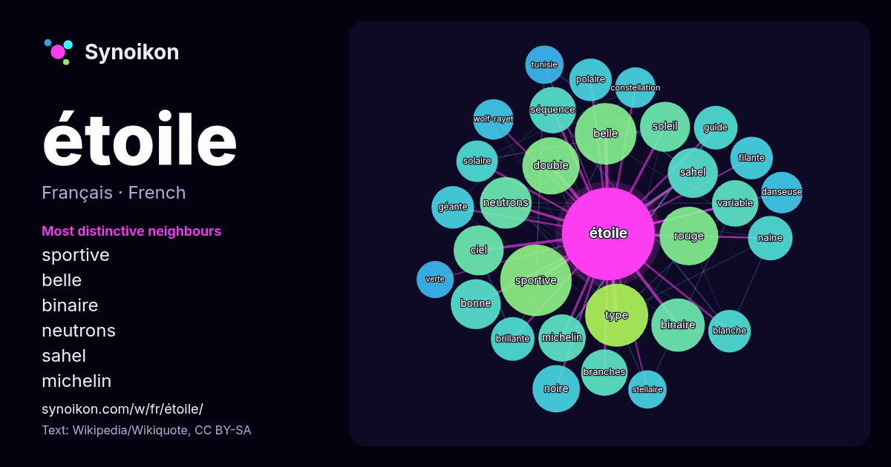

Français · liste des mots du jour
étoile
“star” · Les mots trouvés autour de lui dans 1536 occurrences issues de Wikipédia, Wikiquote.

Voisins les plus spécifiques
- sportive 48×
- belle 35×
- binaire 32×
- neutrons 31×
- sahel 29×
- michelin 26×
- séquence 24×
- naine 23×
- ciel 23×
- soleil 23×
- branches 23×
- double 22×
- filante 22×
- brillante 22×
- polaire 21×
- rouge 21×
- géante 21×
- guide 20×
- noire 20×
- wolf-rayet 20×
× = combien de fois plus souvent que dans le texte général de Wikipédia.
Voisins les plus fréquents
- sportive 59
- type 46
- belle 44
- rouge 40
- double 38
- binaire 33
- film 32
- neutrons 31
- bonne 29
- ciel 29
- sahel 29
- soleil 29
- système 27
- michelin 26
- noire 26
- branches 25
- nom 25
- séquence 25
- variable 25
- principale 24
En contexte
- évoluer en étoile Wolf-Rayet et finalement terminer en supernova. Article détaillé : Étoile Wolf-Rayet. Les étoiles Wolf-Rayet sont des étoiles très massives Wikipedia snippets · Étoile
- étoilé) » redirige ici. Pour les autres significations, voir Sceau de Salomon. Pour les articles homonymes, voir Étoile (homonymie) et David. Étoile de Wikipedia snippets · Étoile de David
- les articles homonymes, voir Étoile polaire (homonymie). Une étoile polaire est, de façon générale en astronomie, une étoile visible à l’œil nu se trouvant Wikipedia snippets · Étoile polaire
- articles homonymes, voir Étoile (homonymie). Une étoile est une figure géométrique représentant l'astre dont elle porte le nom. L'étoile est un symbole très Wikipedia snippets · Symbolique de l'étoile
- Ne doit pas être confondu avec Quasar. Une quasi-étoile ou étoile trou noir est une étoile hypothétique très massive qui aurait pu exister très tôt dans Wikipedia snippets · Quasi-étoile
- articles homonymes, voir étoile (homonymie). Ne doit pas être confondu avec Étoile double ou Étoile multiple. En astronomie, une étoile binaire ou binaire, Wikipedia snippets · Étoile binaire
- les Pays-Bas avec une étoile pour dix titres, le Danemark ou la Turquie avec une étoile pour cinq titres. L'utilisation d'étoile se justifie parfois dans Wikipedia snippets · Étoile (football)
- Ne doit pas être confondu avec Proto-étoile à neutrons. Une étoile à neutrons est un astre principalement composé de neutrons maintenus ensemble par les Wikipedia snippets · Étoile à neutrons
Autres mots
- art
- automne
- carte
- chanson
- chat
- chemin
- cheval
- chien
- climat
- cloche
- cœur
- dieu
- désert
- eau
- famille
- forêt
- histoire
- hiver
- horloge
- jardin
- langue
- miel
- miroir
- monnaie
- montagne
- mort
- mère
- nature
- nourriture
- ombre
- pain
- pluie
- pont
- pouvoir
- printemps
- santé
- science
- sel
- silence
- temps
- tempête
- thé
- train
- travail
- trésor
- vie
- ville
- vérité
- île
Précalculé le 2026-10-09 avec les paramètres par défaut (±5 mots, corpus moyen). La carte interactive peut l’actualiser avec des données en direct.
Interface traduite automatiquement ; corrections bienvenues.